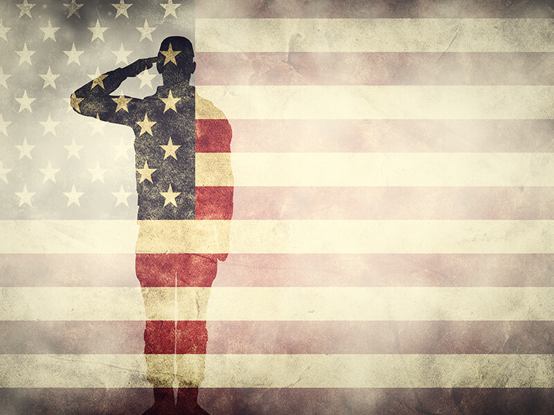
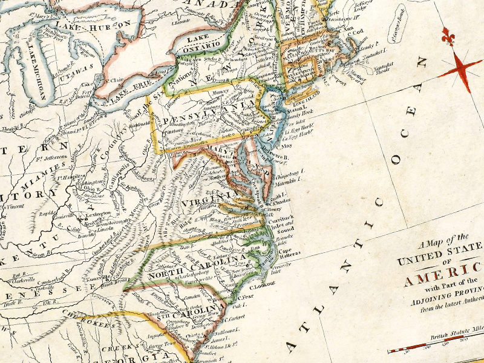
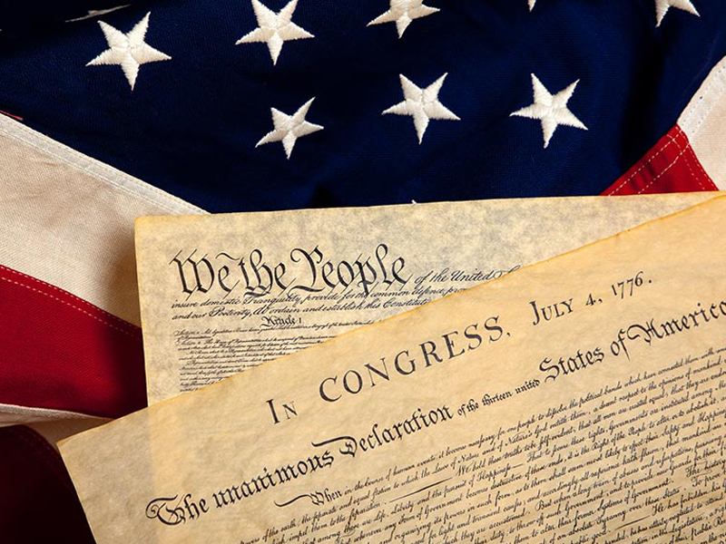
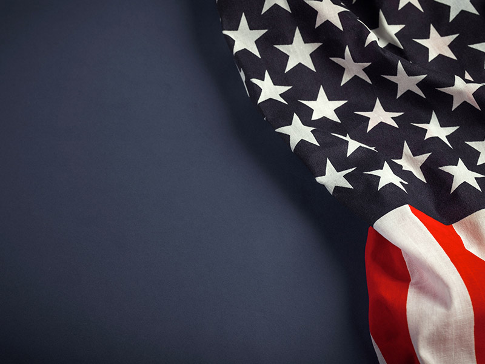

Nothing can take away from the beauty of the United States of America

America. She is one of the most remarkable countries to ever exist. Whether you were born in the “land of the free, and home of the brave”, or live in another part of the world – you probably have often heard that the ol' U.S of A is the greatest country on Earth. That’s because what’s happened in our short history is truly impressive. We may not have the vast amount of history as our British cousins across the Atlantic, but since 1776, we’ve still done some things that are impressive to say the least. Here are just a few of the reasons that America is still on the very best countries on Earth.
1. Our Beginning

Most of us don’t share the same political and religious beliefs that the Pilgrims did when they landed at Cape Cod. But even though we don’t necessarily agree on all things, we can still be impressed with their conviction. Being willing to sail across the ocean blue in order to pursue a land where they could express their religious freedom and build their own country from the literal ground up is not a task for the faint of heart. Though they wore interesting attire, those that started our country are most certainly worthy of the highest respect.
2. Our Constitution

It’s been called by many around the world as the greatest piece of literature to ever be written. Not so much because of all that’s in it, although that helps – but mainly because of what’s NOT in it. It is assumed that our rights are God-given, not government given – an assumption that seems cutting edge in our all too PC world. Offering a balanced view of the government’s role and the individuals responsibility to practice self-control, it is one our finest achievements, and what keeps us unique and a leader in the free world.
3. Our Land
America. She is one of the most remarkable countries to ever exist. Whether you were born in the “land of the free, and home of the brave”, or live in another part of the world – you probably have often heard that the ol' U.S of A is the greatest country on Earth. That’s because what’s happened in our short history is truly impressive. We may not have the vast amount of history as our British cousins across the Atlantic, but since 1776, we’ve still done some things that are impressive to say the least. Here are just a few of the reasons that America is still on the very best countries on Earth.
4. Our People
America is made up of her people, and when it comes to people, we’re clearly the cream of the crop. Although the news outlets would have us all believe that we’re every color hates the other, and is looking for ways to hurt one another – most of us simply haven’t ever experienced such nonsense. Most Americans are eager to help their neighbor, and are excellent ambassadors for this land of the free. We are passionate about our patriotism, and even though many of us differ in ideology, we want America to be the best version of herself possible. We’re not only looking for the easy way for us, but we want America to be the vibrant, charming beauty that we know her to be. That’s what sets us apart, and that’s what would be good to remember when we happen to differ in our ideological, spiritual, and political views.
5. Our Opportunities
We are the land of opportunity. That fact is why people have flocked to our shores from the very beginning. If you want to succeed here, you can. It might be hard, and require a healthy amount of blood, sweat, and sob sessions – but it’s possible. Just like in poker, sometimes others get a better hand than you, but that doesn’t mean they will beat you in the hand. There is always a way to get ahead here in America. We effectively ooze opportunity. Many of come here without so much as two nickels to rub together and have ended up making a very comfortable life for themselves. Not all of us are going to be in the 1 percent of the world’s wealth. But, we can grab the opportunity right in front of us with both hands and do some good in the world.
6. Our Freedom
Some of you may love America just as much as I do, others might be more prone to object to everything that others adore about her. But that’s just what makes this land so amazing. It is a place where we can (and should) peacefully and respectfully disagree. We are free to think what we want about life in general. Everything America stands for is freedom of thought and avoidance of oppression. That is the American dream, isn’t it? To be free to do what we want, and not have a government that keeps us from expressing our beliefs as we see fit.
What it means to be American

The beauty of this land is that as long as we aren’t hurting one another, and aren’t asking for anyone else’s money – we are free to do what we want to do. The closer we keep to that ideal, the more American we are. We should not oppress one another, not with our legislation, and not even with our behavior on social media. America, although ever bold and aggressive, is also gracious. To do any less is to be “Un-American”. To judge and condemn one another based on labels and boxes that others place us in flies in the fact of what Washington, Jefferson, and Franklin had in mind when they signed the Declaration of Independence. Perhaps it’s time for all of us to remember that America, as glorious and beautiful as she is – is nothing without the ideals that made her unique and glorious in the first place.
Original Article